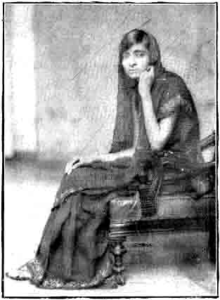

An Evening with Mrs. Jawaharlal Nehru
BY R. L. RAU

Srimati Kamala Nehru
Outside, a brilliant Sunset; the sun setting in a mass of crimson and gold beyond the bridge over the Jumna; giant yellow and pink chrysantheums in riotous blossom, which an Allahabad or a Lucknow alone could produce; a slow procession of camels laden with salt and flour and other merchandise, proceeding with their delightful pace on the Grand Trunk Road on to Agra, and to far-off Peshawar; whilst inside a costly-furnished drawing-room, four women and three men; the women sitting on low diwans, and the men on wicker chairs around a little tea-table laden with the daintiest of vegetable puffs, sandwiches and tea.
That is how I remember the evening as I saw her for the first time with her daughter. I had heard of her from a distance, and often speculated as to what manner of a woman she could be who influenced the destinies and days of such a man as he! I was only–well, let me say, a vagabond, a dreamer of a sort, writer, and then perhaps, the inevitable drudge. She, on the other hand, was the wife of a man whose name was a household word in India; and the mother of a pretty wisp of a child with eyes like ink, with hair closely cut, as soft as her dark silken eyelashes: and who spoke French like a native of Paris. But to come back to the mother.
I have seen many frail people, delicate and drooping as the white and pink lilies that grow in Ootacamund, or poising beautifully like the early lotuses in the lakes of Travancore; but the mother of this child was different. She had a delicateness of her own. It was impossible to believe she was the mother of a girl like that, as she sat next to her. So girlish and so small did she look in spite of the many years of a radiant, irresponsible girlhood she had left behind. Dressed in the soft, purest and creamy Kashmere, with just a ‘V’ in the neck, she looked entrancingly sweet to behold, and yet withal with that fine dignity and taste, with which only good women know to dress; her soft silk saree falling into graceful folds with the silver on it gleaming of a sudden, contrasting strangely with a smile which showed a perfect set of teeth to advantage.
They told me she had been to Switzerland, and that she spent two years there to recoup her shattered health, looking on the Lake of, Lucerne. They told me too that she had been to Paris, to London, to Berlin, to Moscow and in fact to every part of the globe which is worth visiting, along with her husband trying to help him to solve his problems and in trying to understand thing's around them; whilst her little one stayed in a convent at Paris, and learnt French and all that was good for her. To this child of twelve with the dark hair and darker eyes, the father wrote long long letters–letters in which he told her of the Creation, talked to her of Geology, of Socialism and of the great throbbing Life around them, which he himself tried to realise and to understand.1 I wondered if that child could appreciate it all. Then the mother turned to me and said, "Why? she understands every word of it." She told me too that that child was her father's constant companion and how during the great Congress at C--, while men and women were clamouring for his coming out and to address them, he had sat by the sick child and watched her and tended her along with the two other nurses, anxiously awaiting her recovery.
Then we talked of many things; things common enough, which are said and ought to be said at a tea-table. My friend who was a Captain of a local regiment, spoke of the ‘magars’ 2 in the river, and of the weighted corpses that were let down into the river in the silence of the night and how he had shot one such ‘magar’ one day and found in its entrails the silver bangles of some unfortunate human being whom it had swallowed. The ladies spoke of things which are so dear to the heart of women all over the world and which not all ages would make them free from thinking about: of the kitchen, of the servants’ gossip, of the real and proper way of preparing tomato-sandwiches: whether one really needed chillies, and so on whilst the men smoked and talked of equally important matters as the Science Congress (there was a Doctor from Cambridge too who was of the party!), of rabid dogs, of the dust of Allahabad, of the splendid road to Benares, of A. J. S. machines, of o.h.v’s, of Fiat cars, DeLisle limousines and other endless topics.
I remember I lost interest in that conversation; and truth to tell, the account of the ‘magar’ in the Jumna, or the tragedy that befell Miss P . . .'s cook, or the announcement of His Excellency's coming from Lucknow, did not fascinate me as much as the presence of that young mother and her child.
So this was Kamala Nehru, the wife of Pandit Jawaharlal Nehru, the youngest among the Presidents of the Indian National Congress; a man transparently sincere to his ideal, with the manners of an aristocrat, and yet the most democratic among men.
And probably it was this charming woman who had helped him to that unique position. I do not know; I was only a stranger and I have noted my impressions as faithfully as they came to me. But–but, I must confess Mrs. Nehru seemed to be so very different from them all who were there. There was a dignity about her which compelled one's attention; there was a sweetness about her which brought back to one's mind the memory of a lost sister; a frankness and natural simplicity which went straight to one's heart.
I do not think I shall ever forget that memorable evening. It was yet early when she said ‘good-bye’, to the rest of us and went away. From some corner, suddenly a long pink ray of the setting sun touched her forehead as she went out after a long, lingering ‘namaskar’. That simple action, done I suppose in all its artlessness, had a glory of its own. I remember I mumbled something and suddenly became silent; and she went away with that pretty daughter of hers, chattering in Hindi, which was indeed pleasant to hear. So shall I leave her. Ours is a strange world, and one meets another on Life's highway like two travelers hailing each other as they cross one another. Hers was a destiny which was to lead a nation out of thraldom, through a man who had called her is own; and mine was to write about her.
But I do it willingly–gladly. For, I see through her the New Freedom, and the New Woman in India.
l
‘Letters from a father to a daughter.’ By Jawaharlal Nehru,2
‘Magar’ is the Indian word for crocodiles.